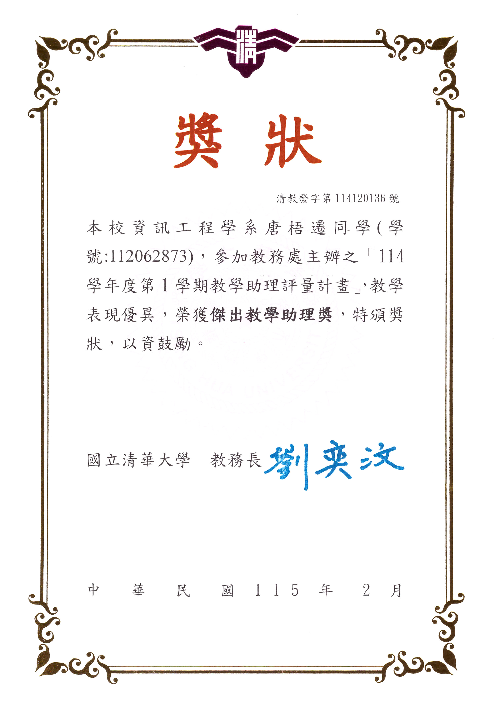
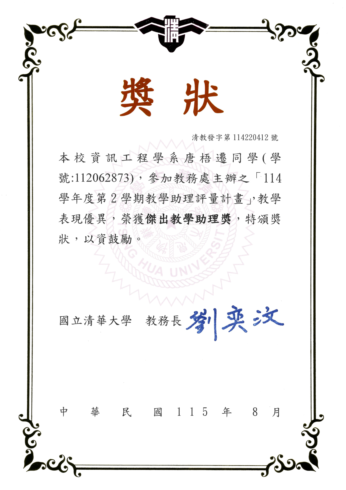

Awards & Honors · Aug 2025–Aug 2026
Outstanding Teaching Assistant Award × 3
National Tsing Hua University · Aug 2025, Feb 2026, Aug 2026
Photos3


Certificates3





Awards & Honors · Aug 2025–Aug 2026
National Tsing Hua University · Aug 2025, Feb 2026, Aug 2026

